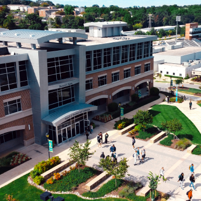
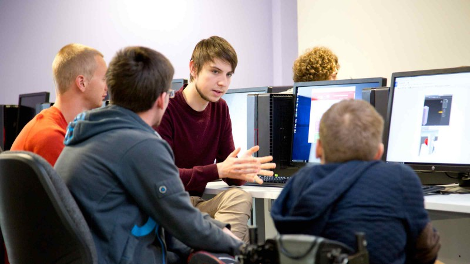

About Us
Our Computer Science Department is dedicated to providing high-quality education and fostering innovation in the field of computer science. We serves as the heart of technological innovation within academic institutions. At the confluence of theory and practice, it nurtures future problem solvers, inventors, and leaders who propel our increasingly digital world forward. This delves into the multifaceted aspects of our great comuter science Department, its role in shaping our digital landscape, and the impact it has on students and society.

Get to know us.
Things get interesting because you are eager to know more , or you become eager to know more because it is interesting?
Our Organization
Mandyflexx University is one of the world's most preeminent public universities. Our impact on individuals, our region and the world is profound. whether we are launching young people into a boundless future or confronting the grand challenges of our time through dauntless research. MU educates more than 38,000students annually, with approximately 2.64% being computer science students. We turn ideas into impact and transform the world around us. For more about our impact, visit our news site, MU News.
